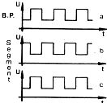
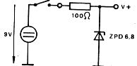

80-Bus Journal |
Juni 1983 · Ausgabe 6 |
Wer seinen Computer zur Überwachung unterschiedlichster Maßeinheiten benutzt, und nicht jedesmal einen A/D-Wandler mit Vorteiler aufbauen will, sollte deshalb besser ein DMM verwenden. Die hier vorgestellte Schaltung zeigt ein Interface für den vielfach verwendeten A/D-Wandler ICL 7106 (LCD-Version).
Zunächst sei erstmal die LCD-Ansteuerung erklärt. Siehe hierzu Bild 1. Auf der den Segmenten gegenüber liegenden Fläche (B.P.) wird eine feste Frequenz angelegt (1a). Soll ein Segment Sichtbar werden, muß gegenüber B.P. eine Potentialdifferenz sein. Das Segment wird deshalb mit dem invertierten Spannungshub von B.P. angesteuert (1b). Andernfalls wird mit dem B.P.-Signal angesteuert (1c). Von den drei unteren Bits des Ports werden über die Transistoren (zur Pegelanpassung) die Select-Eingänge der 8-Kanal-Multiplexer (CD 4512) angesteuert. Am Ausgang Y erscheint das jeweils durchgesteuerte Segment und wird über ein Ex-Oder-Gatter mit dem B.P.-Signal verknüpft. Der Ausgang wird über Widerstand und Z-Diode dem TTL-Pegel angepaßt. Eine „1“ bedeutet jetzt „Segment sichtbar“. Entsprechendes gilt für das Vorzeichen und die Tausenderstelle. Die Schaltung arbeitet bis ca. 8V, und der A/D-Wandler ab ca. 6V einwandfrei. Somit ist der Spannungsbereich festgelegt. Deshalb muss zwischen Spannungsquelle und DMM eine Stabilisierung eingefügt werden (Bild 2).
Die Software übernimmt die Dekodierung und unterdrückt führende Nullen. Das Programm läuft unter NAS-SYS 1, ist voll verschiebbar und muß mit einem Call aufgerufen werden. Zuvor wird die Steuerwortadresse des Ports in das A-Register geladen. Die Datenadresse ist dann um 2 niedriger. Außerdem wird ein Zwischenspeicher von 0C80 bis 0C8F (1D) benötigt. Das Meßergebnis steht von 0C90 bis 0C94 (43) rechtsbündig (oder besser gesagt: highadress-bündig) im Speicher. Die Klammerwerte geben die Adressen im Programm an, in denen die Bereiche festgelegt sind. Bei einem Überlauf wird das C-Flag gesetzt und bei einer nicht erkannten Zahl das Z-Flag. Letzteres war mir bei der Hardware-Entwicklung hilfreich, und zeigte Verdrahtungsfehler an. Alle Register außer A und F werden gerettet.
Wenn im DMM-Gehäuse etwas Platz ist, können Sie die Schaltung direkt einbauen.
Die IC-Beinchen werden waagerecht abgebogen und direkt an das grosse IC gelötet. Für alle übrigen Verbindungen nimmt man am besten Kupferlackdraht. Halten Sie Ausschau nach drei Leiterbahnen, die vom LCD nicht zum Wandler führen! Damit haben Sie auch die Dezimalpunktanschlüsse, die ja nicht vom Wandler erzeugt werden. Die restlichen Bauteile werden „gleichmäßig verteilt“. Das Ergebnis sehen Sie auf den beiden Fotos.
|
 |
|
 |
| Seite 16 von 28 |
|---|